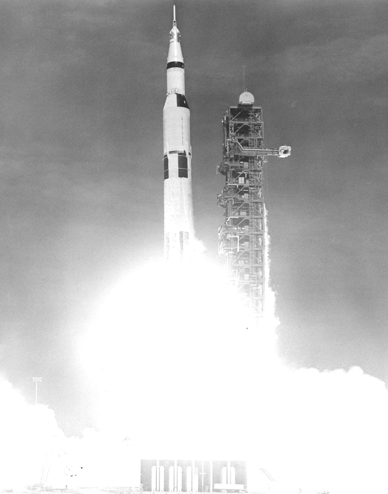
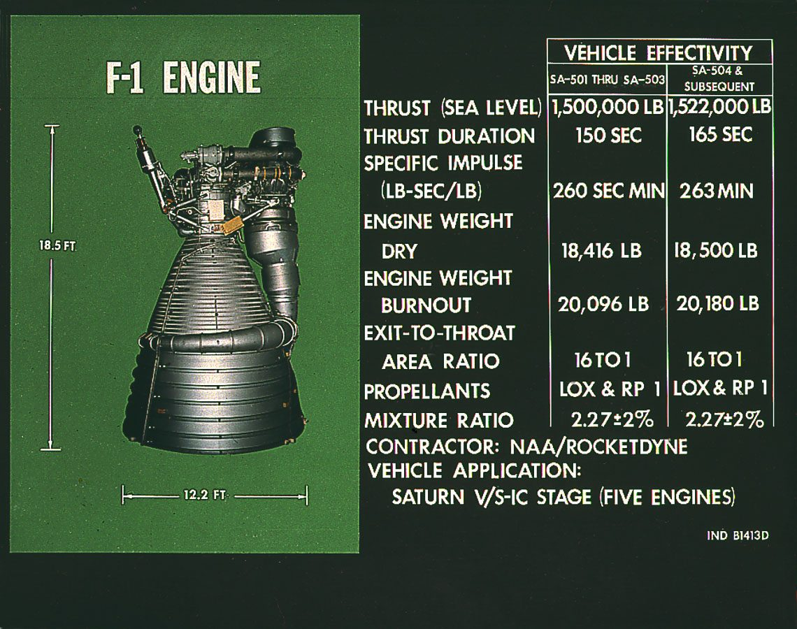

Les plans ne suffisent pas
On répète que la NASA a perdu la technologie de la Saturn V. Ce qui a vraiment disparu est moins visible : l'outillage, les fournisseurs et le savoir-faire d'atelier.

« La NASA a perdu la technologie pour aller sur la Lune. » La phrase circule depuis des années. Elle contient une part de vrai et une grosse erreur de cible.
01 Les plans ont survécu
Le moteur F-1, qui propulsait le premier étage de la Saturn V, est documenté en détail. Les dessins et les archives techniques ont été en grande partie conservés, chez la NASA et chez Rocketdyne, l'entreprise qui fabriquait le moteur.
Dire qu'on n'a plus les plans est donc faux. Le problème est ailleurs.
02 Ce qui a disparu : l'outillage
Un plan se dessine en une après-midi. Fabriquer la pièce demande autre chose : des machines, des gabarits, des moules, des procédés réglés finement, et des ouvriers capables de juger une soudure à l'œil. Pour la Saturn V, cet outillage ne servait qu'à ça.
Quand le contrat s'arrête, on range l'outillage, puis on le détruit ou on le met au rebut. Selon l'analyse publiée par The Space Review, celui de la Saturn V a été détruit il y a plus de trente ans.

03 La vraie chaîne, c'est les fournisseurs
Une fusée n'est pas une entreprise. C'est une chaîne de milliers de fournisseurs. Le programme Apollo en a mobilisé environ 400 000 personnes et 20 000 entreprises, selon les chiffres de l'historique de la NASA. Chacune gardait une partie du savoir : un traitement de surface, un alliage, un contrôle qualité, une manière de tenir une tolérance.
Quand une de ces entreprises ferme, la fabrication ne ralentit pas. Elle s'arrête, et ce qui manquait n'est écrit nulle part. Un plan décrit le résultat. Il ne décrit pas toujours les gestes qui ont permis de l'obtenir.
04 Pourquoi refaire coûte si cher
Reconstruire un F-1 ne veut pas dire copier des plans. Il faut remonter toute une filière : fonderies, usinage, tests, qualification, contrôles. En 1992, Rocketdyne a estimé que le développement initial du F-1, sur huit ans, avait coûté 1,77 milliard de dollars en dollars de 1991.
Refaire le moteur coûterait donc très cher, au point qu'un nouveau moteur peut sembler plus simple. Le Concorde suit une logique proche : même documenté, on ne le refabrique plus, faute de filière.
05 Un budget qui s'effondre
Au pic du programme, en 1966, Apollo représentait 4,4 % des dépenses fédérales américaines. Aujourd'hui, la NASA reçoit environ 0,4 %. Moins d'argent, ce sont moins de commandes, donc moins de fournisseurs, donc moins de savoir-faire. Le budget ne fabrique pas seulement des fusées : il entretient les filières qui permettent d'en fabriquer.
06 2013 : retrouver des pièces
En 2013, une équipe privée, Bezos Expeditions, a annoncé avoir remonté du fond de l'Atlantique environ 11 tonnes de composants de moteurs F-1. Ces pièces ont été confiées à un centre de conservation au Kansas. De son côté, le centre Marshall de la NASA a numérisé en 3D un générateur de gaz à partir de moteurs conservés, pour en produire des dessins de conception.
Ce ne sont pas les plans qui manquaient, mais la matière, l'outillage et les gens capables de la mettre en forme.
07 Ce qu'on retient
La technologie ne s'est pas perdue dans une bibliothèque. Elle s'est perdue dans une chaîne : les machines, les fournisseurs, les gestes. On oublie vite ce qui ne se voit pas, et ce qui ne se voit pas est souvent ce qui fait marcher le reste.
Refaire, ce n'est pas récupérer. C'est réinventer.
Sources
- Dwayne A. Day, « A mighty thunderous silence: The Saturn F-1 engine after Apollo », The Space Review. thespacereview.com/article/3724/1
- NPR, 20 mars 2013, sur la remontée des moteurs F-1. npr.org
- Space.com, sur la conservation des moteurs Saturn V. space.com
- Smithsonian, National Air and Space Museum, fiche d'un injecteur F-1 récupéré. airandspace.si.edu
- NIST, « Houston, we have engine remnants », sur l'analyse des fragments de moteur. nist.gov
- NASA History Office, programme Apollo : effectifs et sous-traitance. nasa.gov/history
- OMB, Historical Tables : part des dépenses fédérales. whitehouse.gov/omb
Photos : NASA, domaine public. Les chiffres 400 000 et 20 000 viennent de l'historique de la NASA ; l'estimation de 1992 provient de Rocketdyne, citée par The Space Review.